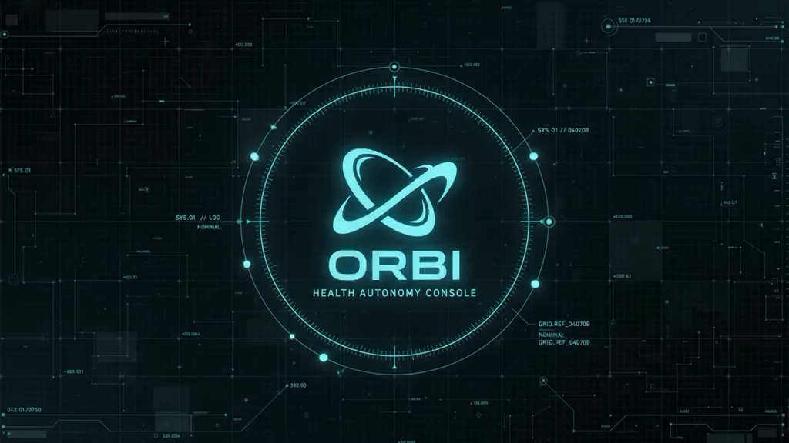
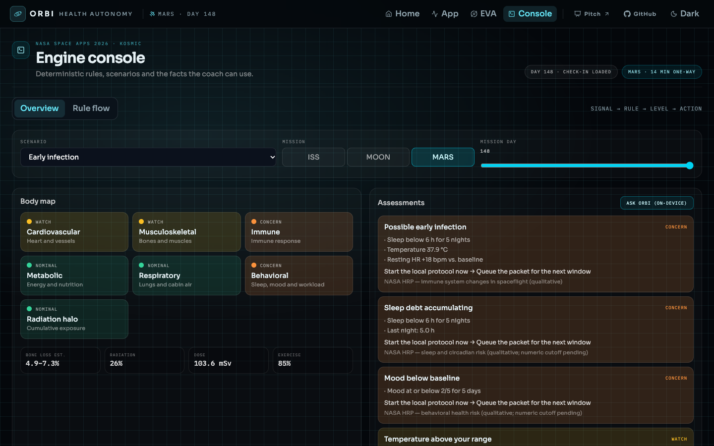
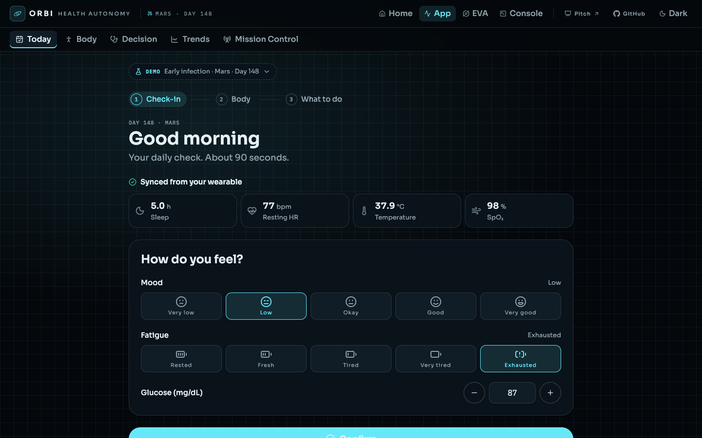
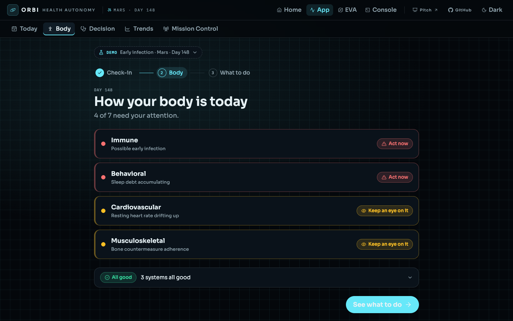
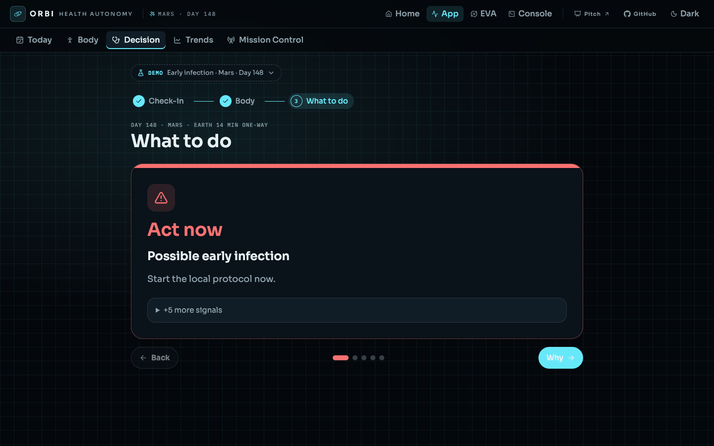
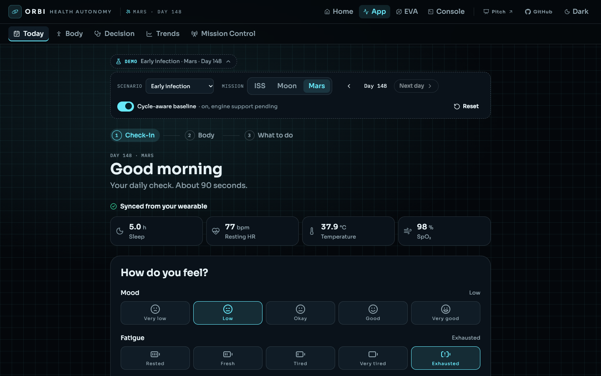

THE CHALLENGE · 0:00–0:25
Challenge:
Health monitoring
for astronauts
ORBI turns a 90-second check-in into an explained decision, on board, before the reply from Earth arrives.
Team Kosmic
Agustín Pane · engine & deploy
Andrea Tapia · product & decision
Elena Almansa · story & submission
Yery Rodríguez · body & trends
Andrea · design & mission control
NASA Space Apps Challenge 2026 · Health Monitoring for Astronauts

PDF slide 01 · 0:00–0:25 · target 25 s
Message: open with the challenge: caring for astronaut health when Earth is too far to help.
“Day 148 on the way to Mars. Fourteen minutes from Earth, each way. The commander is sleeping badly, fatigue is rising, and her heart rate is drifting. There is no hospital and no evacuation. ORBI is a health autonomy console for that moment.”
THE PROBLEM / THE SOLUTION · 0:25–0:55
The data is not
the decision.
Stress, infection, or the cabin?
ORBI compares every reading with the astronaut's personal baseline and explains what to do next. Mars is 14 minutes away, one way.

PDF slide 02 · 0:25–0:55 · target 30 s
Message: collecting data is not enough; it has to become a decision.
“Sleep is down, fatigue is up, heart rate is drifting. Is it stress, an infection, or a cabin problem? ORBI does not stop at a dashboard. It explains the pattern, names the rule and gives the next action. On Mars, the reply from Earth takes fourteen minutes, so the decision has to happen on board.”
HOW ORBI WORKS · 0:55–1:35
One check-in. Six systems.
One decision.
A 90-second check-in becomes a body map, an explained triage and an action card. Every alert shows its rule and its source.



Cabin or crew? The same oxygen drop can be the person or the room. ORBI says which.
PDF slide 03 · 0:55–1:35 · target 40 s
Message: show a real capture of the prototype. Avoid filling the slide with text.
“The astronaut confirms what the wearables already know. The body map shows six systems and a radiation halo, each mapped to a NASA hazard. The decision shows the level, the rule that fired and the action. And it separates the body from the environment: a cabin CO₂ problem is not the same as an infection.”
WOMEN'S HEALTH IN SPACE · 1:35–2:15
Same sensors.
Different bodies.
Smarter decisions.
Designed · cycle-aware baseline in development (P3)
- No new hardware. The same wearables: sleep, HR, SpO₂, temperature, glucose, mood and fatigue.
- Optional cycle field. A phase-aware baseline, not a different device or hormonal measurement.
- Context, not a false alarm. In the luteal phase, temperature and heart rate can rise.
- Absolute safety thresholds never relax. A real fever still crosses the line.
- Private by default. Shared only with consent; the packet carries the conclusion.

PDF slide 04 · 1:35–2:15 · target 40 s
Message: same sensors, different bodies, smarter decisions. The cycle-aware layer is in development, not live yet.
“We do not add a new sensor or measure hormones. We add an optional menstrual-cycle field so ORBI can contextualise the same measurements. In the luteal phase, temperature and heart rate can rise; without that context, it could look like an infection. The personalisation never relaxes absolute safety thresholds, and the data stays private unless she chooses to share it. The full 90-day, cycle-aware engine is the next step, P3.”
FROM DRIFT TO DECISION · 2:15–2:55
Your health.
Your mission.
Your autonomy.
On Mars, ORBI acts on board first. It prioritises, explains and escalates. It does not diagnose.
orbi.agustinpane.xyz · Team Kosmic · NASA Space Apps 2026
PDF slide 05 · 2:15–2:55 · target 40 s
Message: close with a memorable line and the logo. Do not introduce new features at the end.
“On Mars, waiting for Earth is not a plan. ORBI prioritises the action on board, explains the decision and escalates when the window opens. It is honest about what cannot be measured: bone loss is estimated and radiation is a budget. ORBI does not diagnose. It prioritises, explains and escalates. Your health. Your mission. Your autonomy.”